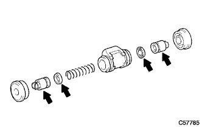
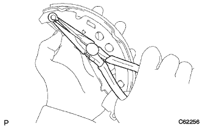

Rear brake assembly |
| 1. Rear Hoi-Lucilinda Cup Kit Installation |
Apply rubber grease to two new wheel cylinder cups and attach them to two wheel cylinder pistons.
Apply rubber grease to two wheel cylinder pistons.
Attach the rear wheel cylinder compression spring and two wheel cylinder pistons to the wheel cylindabose.
|  |
Attach two new wheel cylinder boots to the wheel cylindabose.
| 2. LH Fr or UPR Rear Wheel Brake Cylinder Assy Installation |
In the bolt, attach the rear wheel cylinder ASSY LH FR (UPR).
Use the Union Nut wrench 10 to connect the rear braiche uve No.4 to the wheel cylindabode.
| 3. Rear drum brake bleeder plug temporary tightening |
| 4. Backing plate grease coating |
 |
Apply non -Meltrob to the contact between the backing plate and the rear brake shoe ASSY.
| 5. Rear brake parking brake shoe lever SUB-ASSY LH installation |
|  |
Attach the parking brake shoe lever LH to the brake shoe (rear) with a new C washer.
| 6. Brake shoe (rear) installation |
Use the needle nose pliers to attach the parking brake lever LH to the No.3 parking brake cable.
 |
Use the SST to attach the brake shoe (rear) with the rear brake shoe hold down spring cup, the rear brake shoe hold down spring and the rear brake shoe holding pin.
Attach the rear brake zeuling spring to the brake shoe (rear).
| 7. Rear brake Automatic adjust lever LH installation |
 |
Lear brake automatic adjustable lever LH and rear brake automatic adjacent livert spring are attached to the brake shoe (front).
| 8. Brake shoe (front) installation |
Attach the parking brake shoe trattle set LH to the brake shoe (front).
Connect the brake shoe (front) to the rear brake zezwritness spring.
 |
Use SST to attach a brake shoe (front) with the rear bra lighter square hold down spring cup, rear brake shoe hold down spring and rear brake shoe hold down spring pin.
Use SST to attach the tension spring to the brake shoe (rear).
| 9. Rear drum brake installation inspection |

Inspect that each part is properly attached.
| 10. Lear brake drum installation |
| 11. Adjustment of brake drums and lining gaps |
 |
Turn the adjuster with a flathead screwdriver from the backing plate service hall, and let the brake shoe ASSY contact the rear brake drum.
 |
Turn the adjuster by turning the adjuster with another flathead screwdriver while pressing the rear brake automatic adjust lever LH with a flathead screwdriver.
The brake shoe Assy is no longer in contact with the rear brake drum, and the adjuster is further reduced to contract to contract.
| 12. Brake system air removal |
Brake fluid replenishment
 |
Stand up the brake fluid can on the reservoir.
Master Cylinda Air
Use Union Nut Wresten 10 to separate the two brake tubes from the brake master cylinder Assy.
 |
Slowly step on the brake pedal and hold that state.
 |
Clean the tube hole with your finger and release the brake pedal.
Release your finger, slowly step on the brake pedal, hold the tube hole again, release the brake pedal, and repeat it three or four times.
Use the Union Nut wrench 10 to connect two brake tubes to the brake master cylinder asser.
Brake -based system air removal
Connect the vinyl tube to the buder plug.
Press the brake pedal several times and loosen the breeder plug while stepping on the brake pedal.
When the brake fluid does not come out, tighten the bruder plug and put the brake pedal.
Repeat until the air is mixed in the brake fluid.
Similarly, remove the air from the brake line of each wheel.
Brake fluid quantity inspection
Check the amount of brake fluid and replenish the brake fluid to the maxal position if necessary.
| 13. Brake fluid leak inspection |
| 14. Lear tire installation |
| 15. Parking brake pedal stepping check |
Slowly step on the parking brake pedal and count the operating noise.
| 16. Parking brake pedal stepping adjustment |
 |
Press the parking brake pedal once strongly.
Park the parking brake pedal again and unlock.
Loose the lock nut in the parking brake pedal part, and adjust the adjustment nut so that stepping is a reference value.
Fix the adjustment nut and tighten the rock nut.
After operating the parking brake pedal at least once, check for stepping.
Make sure there is no drag of the parking brake.
When the parking brake pedal is operated, confirm that the brake indigor lamp lights up.